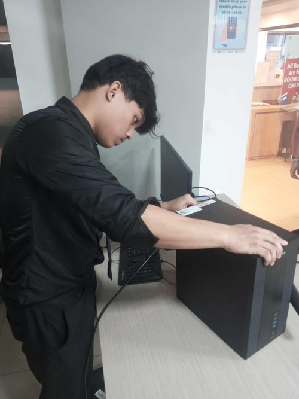
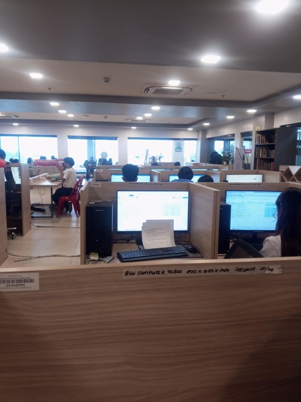

PC building, troubleshooting, and hardware knowledge are skills I developed and strengthened during our On-the-Job Training (OJT) in senior high school. During this experience, we were given hands-on tasks that involved assembling complete computer systems from scratch. This included properly installing key components such as the motherboard, processor (CPU), RAM, storage devices like HDD or SSD, power supply, and connecting all necessary cables. We were also taught the importance of proper cable management and airflow to maintain system stability and prevent overheating. Through repeated practice, I became more confident in handling hardware parts carefully and correctly. Aside from building computers, a big part of our training focused on troubleshooting different types of problems. We encountered issues such as computers not turning on, slow system performance, overheating, and hardware connection errors. We learned how to diagnose these problems step-by-step by checking components, testing connections, and identifying which parts might be faulty. This helped me improve my logical thinking and patience, since solving hardware problems often requires careful observation and trial-and-error methods. We also performed regular maintenance tasks to keep systems running smoothly. This included cleaning dust inside the computer, checking fans and cooling systems, organizing cables, and making sure all components were functioning properly. In some cases, we also assisted in upgrading systems by replacing or adding new parts such as RAM or storage devices to improve performance. These activities gave me a deeper understanding of how to maintain and improve a computer system over time. Overall, this OJT experience helped me build strong foundational skills in computer hardware. It improved my technical knowledge, problem-solving ability, and confidence in working with real computer systems. It also taught me discipline, responsibility, and attention to detail, which are important when handling delicate and valuable equipment. This experience continues to help me as I pursue further learning in the field of Information Technology.
